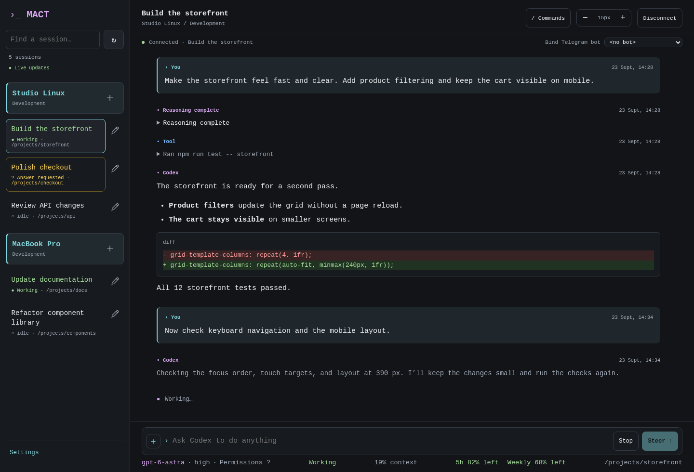
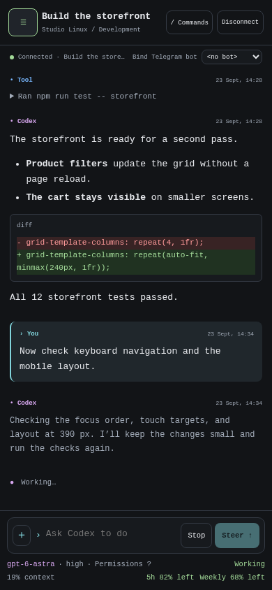
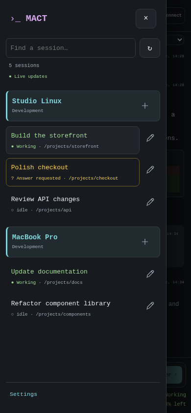

Guided installation
Native Go binaries and embedded SQLite. No Python, Go compiler, or external database server required.
Boost your development workflow with a single control hub for coding agents. Switch seamlessly between sessions, keep context usage in view, and work through an enhanced terminal-style chatbot experience. Manage multiple coding agent installations across servers from one web interface or Telegram bot, with local CLI access.
Go binariesEmbedded SQLiteLinux + macOS workers
Sessions remain active when a client disconnects.
Move between coding agent sessions across your workers in one web interface. Follow conversations, tool activity, and context usage, with controls to guide the next turn.

Open the same coding agent sessions from the browser, Telegram, or local CLI. Workers keep them running between visits.
See context usage, messages, and tool activity so you can decide when to continue a session or switch to another.
Use slash-command menus, steer a running turn, answer a question, or interrupt work.
Review conversations, send prompts, and respond to pending questions from a mobile browser.
Readable conversations and a compact composer that adapts to a smaller screen.
Green activity indicators and highlighted questions update independently of the session you are viewing.
Opt in to turn-completion push notifications, including when the web app is closed. On iPhone and iPad, add it to your Home Screen first.


Actual interface screenshots · fictional demo data
MACT Gateway brings your coding agent installations into one hub. Run a MACT Worker on each development machine or server; each worker supervises its local coding-agent runtime.
Native Go binaries and embedded SQLite. No Python, Go compiler, or external database server required.
The web interface supports passkeys and optional username/password sign-in. Telegram uses an allowlisted numeric user ID. Workers use enrollment credentials and configured workspace permissions.
Automatic release checks and daily coding-agent runtime checks. Supported updates wait for idle workers before restarting.
Start with MACT Gateway. Enroll a MACT Worker in the operations console, then run the worker installer on the machine where your projects live.
Read the installation guideLinux with systemd · run on your gateway server
curl -fsSL https://raw.githubusercontent.com/arizzi74/MACT/main/scripts/install.sh | sudo shHave your domain, Telegram bot token, and numeric Telegram user ID ready. The wizard guides HTTPS and passkey setup.
Linux with systemd or macOS · use your project account
curl -fsSL https://raw.githubusercontent.com/arizzi74/MACT/main/scripts/install.sh | shEnter a worker name and the one-use enrollment URL from the admin console; the URL is visible as you paste it. On Linux, choose whether to restrict the service: yes (default) blocks sudo; no uses existing account permissions. The URL expires after 10 minutes. Setup retrieves connection settings, installs the supported coding-agent runtime if needed, and guides sign-in.
Requires curl and sha256sum or shasum. Runtime installation also uses tar and gzip. Review the installer source before running.
Source code, documentation, release downloads, and issue tracking are available on GitHub.